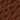
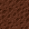
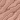
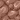
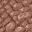
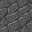
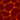

texture synthesis
Given an example texture image, it generates a tileable image of any size that has the same texture.
The algorithm I'm using is per-pixel "k-coherence search", with a Cauchy metric. See Li-Yi Wei's site for lots of information on texture synthesis (you'll need to be familiar with the terminology to make any sense of my first sentence), and Paul Harrison's thesis for some specifics on the Cauchy metric (this is implemented in the cauchy branch in git; the master branch uses a squared-error or Gaussian metric).
The source tiles are from Hard Vacuum. They're 20x20, and shown here expanded to 32x32 tiles with the texture synthesis algorithm. Click a link to see 8 interchangable tiles and a randomly picked field of them.
| crater |  ->  |
| sand |  -> |
| snow | -> |
| mountain |  ->  |
| stone | ->  |
| water | -> |
| lava |  -> |
| grass | -> |
| ice | -> |